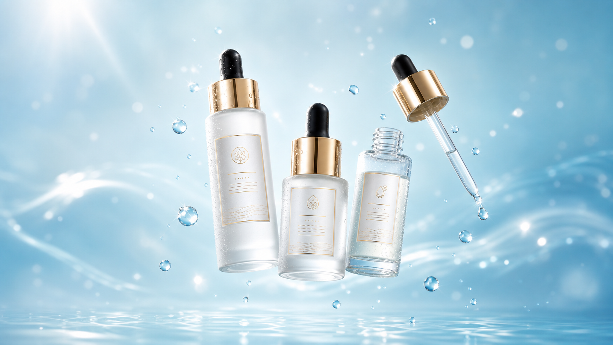
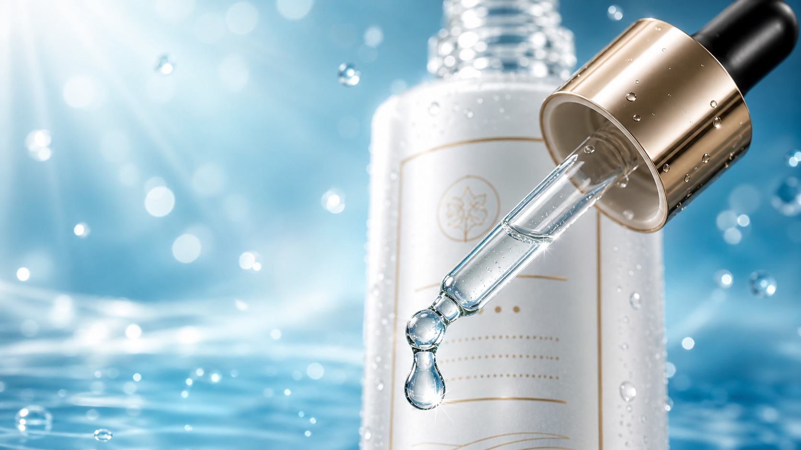
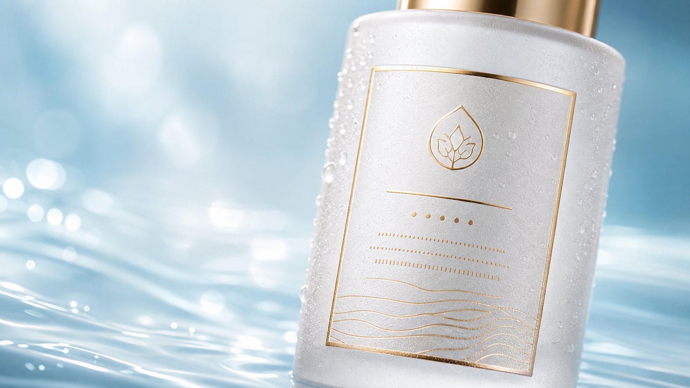
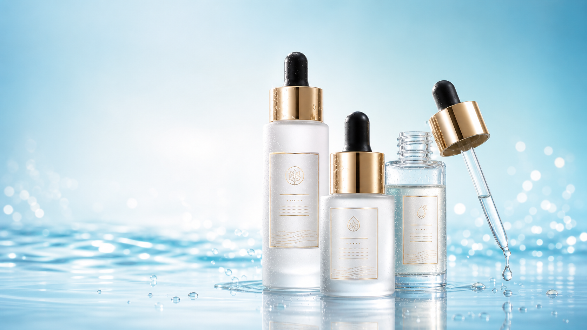

01 / DAY SERUM
朝、軽やかにうるおう。
みずみずしいヴェールが肌になじみ、日中の乾燥感を忘れるような、なめらかなツヤ印象へ。
MOLECULAR CARE RITUAL
LUMINA DEWは、美容液を「朝にほどくうるおい」と「夜に包み込むうるおい」に分けて考えたスキンケアリチュアル。 乾燥でゆらぎやすい肌に、角層まで続くうるおいと、ふっくらとしたハリ印象を届けます。

01 / DAY SERUM
みずみずしいヴェールが肌になじみ、日中の乾燥感を忘れるような、なめらかなツヤ印象へ。
02 / NIGHT SERUM
乾燥でこわばりやすい肌を、眠っている間のケアでしっとり満たし、翌朝のふっくら感へつなげます。
03 / FILLING GLOW
表面だけでなく、肌印象そのものが満ちて見えるような、上質で静かなツヤを目指します。
HYALURONIC ACID INSPIRED
サイズの異なるうるおい発想で、角層まで届くうるおい感と肌表面を包むなめらかさを両立。 乾燥印象にアプローチします。


VISIBLE SKIN BENEFITS
角層までうるおいを届け、乾燥で乱れやすいキメをなめらかに整える。 頬や口もとの乾燥くすみ印象まで、明るくふっくら見える肌へ導きます。
DEW INFUSION
乾燥でくすんで見えやすい肌に水分を補い、光を受けたようななめらかさと透明感を目指します。
HOW TO USE
デイセラムを顔全体へ薄く広げ、みずみずしいツヤの土台を整えます。
ナイトセラムを頬や口もとなど、乾燥が気になる部分へ重ねます。
最後に肌を包み込み、翌朝のなめらかなハリ印象へつなげます。

LIMITED PRE-ORDER
LUMINA DEW Molecular Hydration Serum
Day Serum / Night Serum / Ritual Set